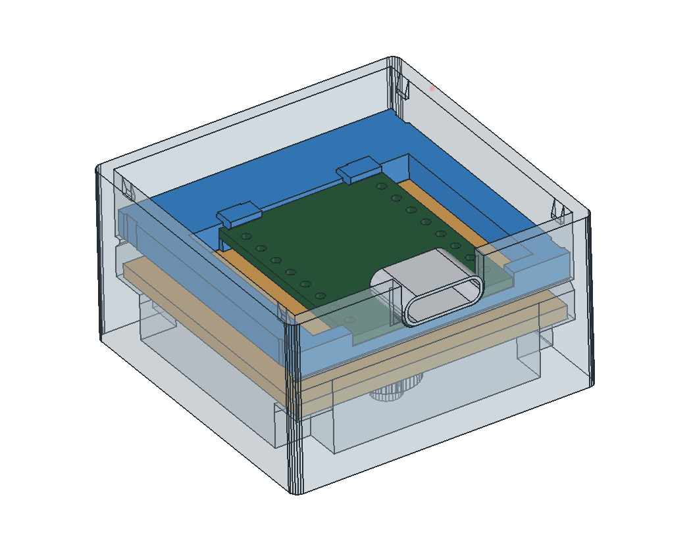
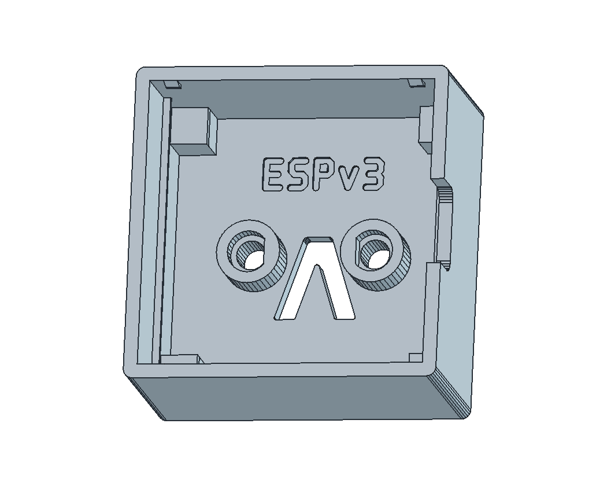
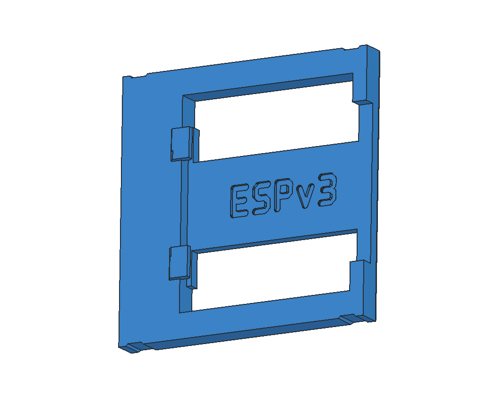
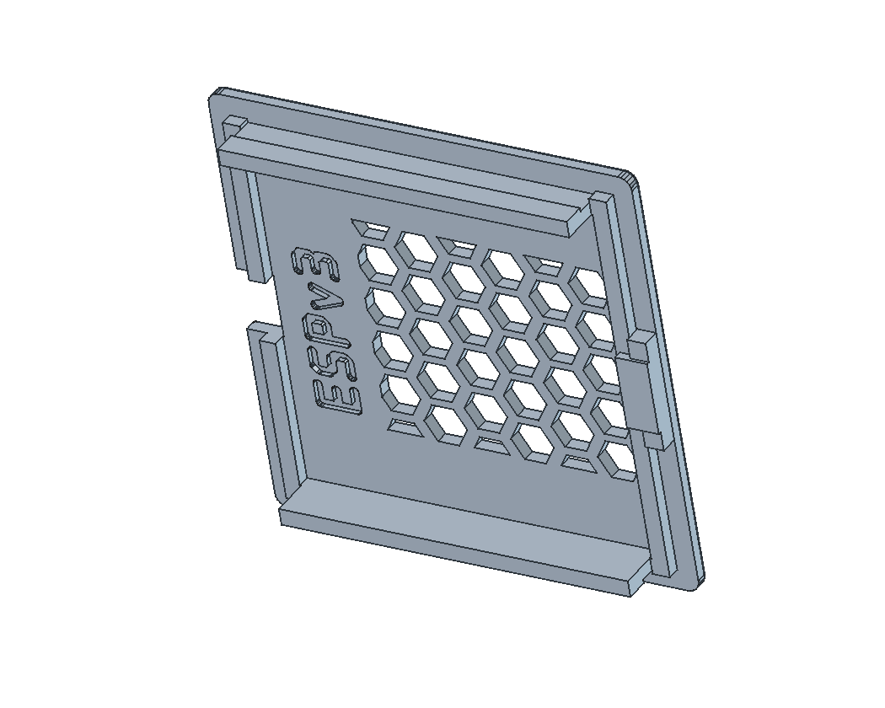
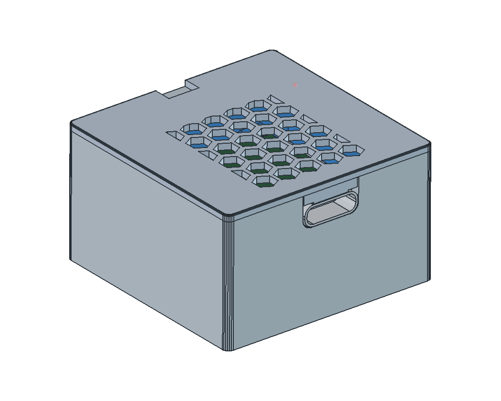
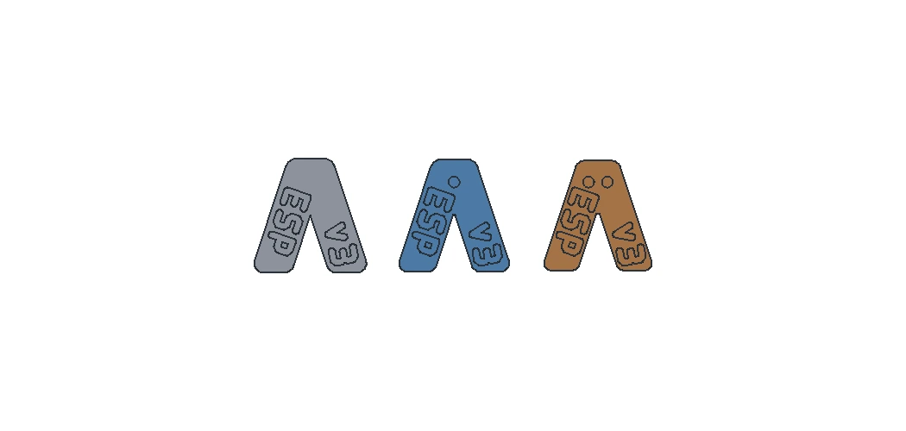

Optolink
ESP v3
Плата ESP32-C3 устанавливается в кассету вне корпуса. Кассета опускается сверху вместе с разъёмом USB-C, а выступ крышки удерживает разъём по высоте.

Что изменилось в v3
В v2 заднюю кромку платы нужно было завести под ступеньки, одновременно попадая разъёмом в закрытое окно боковой стенки. Открытый паз позволяет выполнить эти операции последовательно.
Опора заднего края ESP
Опорная полка кассеты продлена на 0,6 мм под заднюю кромку текстолита. Плата садится до существующего торцевого упора. Размер её габаритного макета — 23 × 18 × 1 мм.
Усиленные ступеньки
Каждая ступенька увеличена с 1,5 × 2,5 до 2,5 × 3,5 мм в плане. Пластик у корня увеличивает площадь соединения с кассетой. Под ступеньками предусмотрено 0,2 мм по высоте сверх толщины платы. Между ступеньками оставлен проход 10 мм.
Паз USB-C и прижим на крышке
Верхняя перемычка в стенке убрана. Паз шириной 9,25 мм открыт до верхней кромки. При закрытии выступ крышки входит в паз, а его контактная площадка ложится на верхнюю плоскость металлической оболочки USB-C. Номинальная площадь контакта — 14,9 мм².



Вдавленная маркировка ESPv3
Метка расположена на внутреннем дне корпуса, под крышкой, на полке кассеты под платой и на внутренней стороне каждой V-вставки. На V-вставках надпись разделена на ESP и v3, рядом сохранены точки для различения вариантов.
Глубина — 0,4 мм. Штрихи — 0,72 мм на основных деталях и 0,62 мм на V-вставках. В комплектной ориентации углубления открыты вверх. Контуры пяти символов проверены в Cura для сопла 0,4 мм и слоя 0,2 мм.
Порядок сборки
- Уложить нижнюю монтажную плату на опоры. Для прохода под полками кассеты наклонить её вдоль X примерно на 11°, завести один край под полку и опустить второй.
- Вне корпуса задвинуть ESP32-C3 со стороны USB под две ступеньки кассеты до заднего упора.
- Опустить кассету на полки корпуса. Одновременно завести USB-C в открытый верх паза.
- Защёлкнуть крышку. Её выступ входит в паз и ограничивает подъём разъёма.


Детали для печати
Для одного устройства нужны корпус, крышка, кассета и один вариант V-вставки. Корпус и кассета ориентированы основанием на стол, крышка — наружной плоскостью вниз.
| Деталь | Габариты, мм | Особенность | Файл |
|---|---|---|---|
| Корпус | 34,15 × 34,25 × 19,00 | Открытый паз USB-C. | 01 · STL |
| Крышка | 34,15 × 34,25 × 5,00 | Выступ с площадкой прижима USB-C. | 02 · STL |
| H-кассета | 30,65 × 30,75 × 3,70 | Удлинённая опорная полка и увеличенные ступеньки. | 03 · STL |
| V-вставка, исходная | 10,146 × 10,35 × 11,00 | Без точки. | 04 · STL |
| V-вставка, −0,1 мм | 9,945 × 10,15 × 11,00 | Одна точка. Контур уменьшен на 0,1 мм на сторону. | 05 · STL |
| V-вставка, −0,2 мм | 9,745 × 9,95 × 11,00 | Две точки. Контур уменьшен на 0,2 мм на сторону. | 06 · STL |
Файлы проекта
00_Исходники
01_Разработка
02_На печать
Шесть STL из таблицы в одном архиве. Скачать print.zip
03_Иллюстрации
Виды корпуса, кассеты и крышки, открытая и закрытая сборки, сравнение V-вставок.